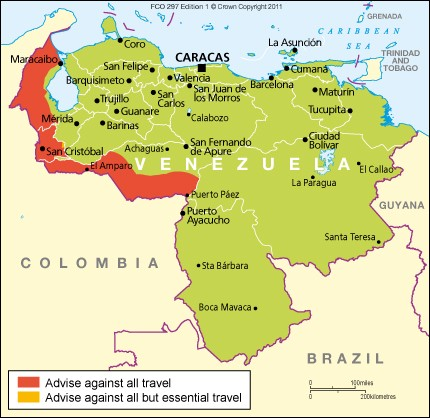

Venezuela, named the Bolivarian Republic of Venezuela since 1999, is located on the northern coast of South America. The country comprises a continental mainland and numerous islands in the Caribbean Sea. It borders Guyana to the east, Brazil to the south, and Colombia to the west.

Skateboarding was probably born sometime in the late 1940s, or early 1950s, when surfers in California wanted something to do when the waves were flat. This was called "sidewalk surfing" - a new wave of surfing on the sidewalk as the sport of surfing became highly popular. No one knows who made the first board; it seems that several people came up with similar ideas at around the same time. The first manufactured skateboards were ordered by a Los Angeles, California surf shop, meant to be used by surfers in their downtime.
Annabelle is a 2014 American supernatural horror film directed by John R. Leonetti, written by Gary Dauberman and produced by Peter Safran and James Wan. It is a prequel to 2013's The Conjuring and the second installment in The Conjuring series. The film was inspired by a story of a doll named Annabelle told by Ed and Lorraine Warren. The film stars Annabelle Wallis, Ward Horton, and Alfre Woodard.